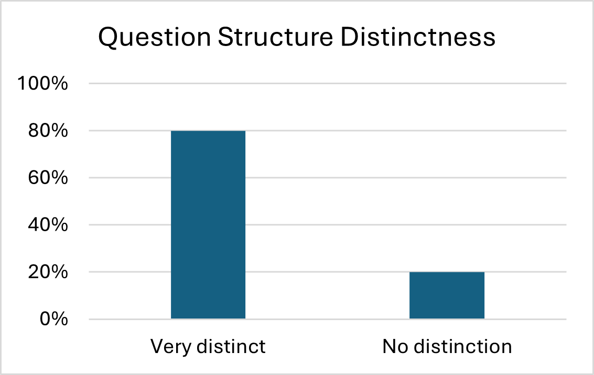
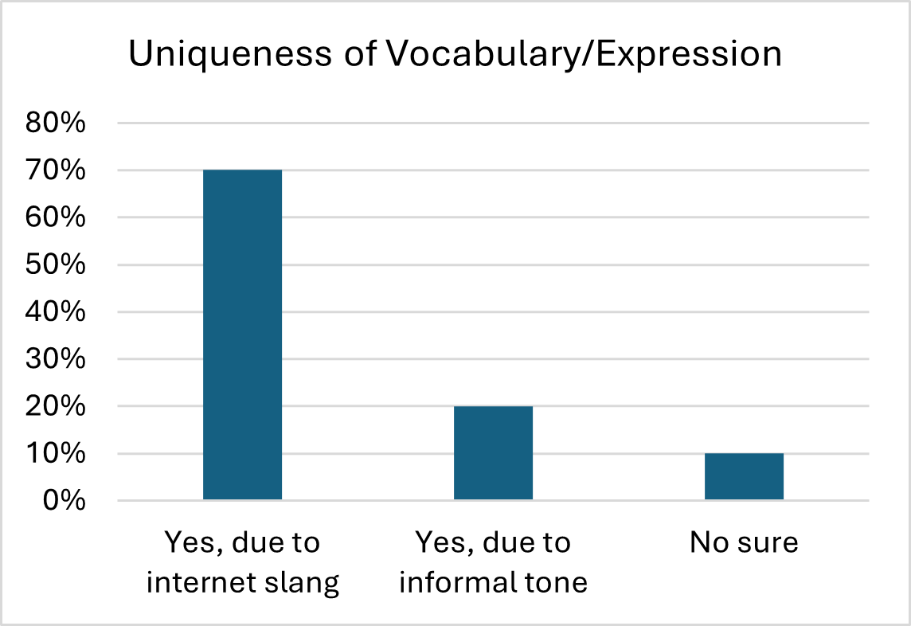
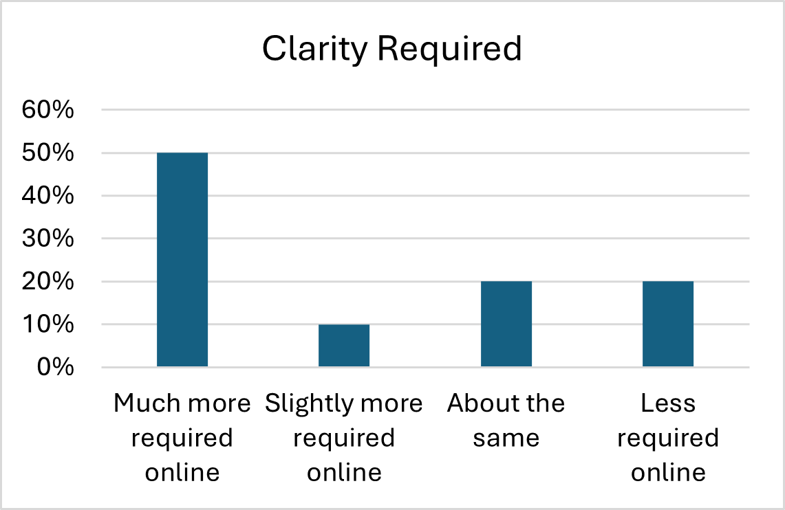
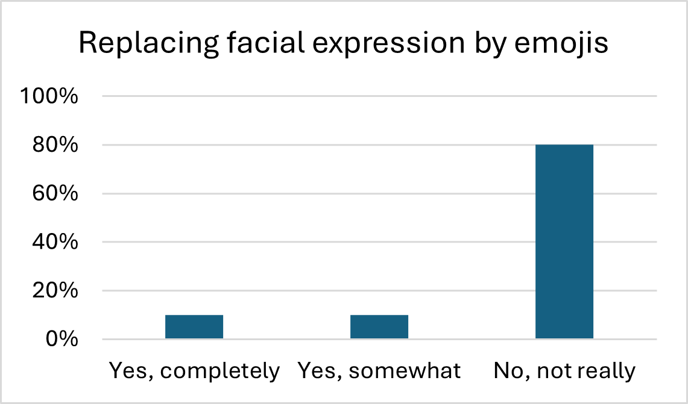

<!DOCTYPE html>
<html lang="en">
<head>
    <meta charset="UTF-8">
    <meta name="viewport" content="width=device-width, initial-scale=1.0">
    <title>LT3210 Final Project</title>
    <style>
        .bigtitle{
        background: lightsteelblue;
        text-align: center;
        margin-bottom: 30px;
        font-size: 30pt;
        padding: 30px;
        color: black;
        border-radius: 20px;
        box-shadow: 0 2px 3px rgba(0,0,0,0.1);
    }
        .analysis{
        background: rgb(220, 247, 242);
        margin-bottom: 10px;
        font-size: 20pt;
        padding: 20px;
        color: black;
        border-radius: 20px;
        box-shadow: 0 2px 3px rgba(0,0,0,0.1);
    }
        .analysis1{
        background: rgb(220, 247, 242);
        font-size: 13pt;
        margin-bottom: 20px;
        padding: 30px;
        color: black;
        border-radius: 20px;
        box-shadow: 0 2px 3px rgba(0,0,0,0.1);
    }
        
    </style>
</head>
</html>
    <h1 class="bigtitle">LT3210 Final Project</h1>

    <body style="background-color: #F7F2ED;">


        <p class= "analysis" style="font-size: 22px;"> 2. Language Features and Expression </p>
    <br>
    <div style="display: flex; flex-wrap: wrap; justify-content: center; gap: 20px;">
    <div style="text-align: center;">
    
    </div>
    <div style="text-align: center;">
    
    </div>
    <div style="text-align: center;">
    
    </div>
    <div style="text-align: center;">
    
    </div>
</div>
    <br>
    <p class= "analysis1">In terms of “language features and expressions”, the above tables reflect varying levels of agreement on how language affects communications. Effective communication relies heavily on aspects such as distinct question structures, unique vocabulary, clear expression, and appropriate use of emojis. For question structures, there is a significant variation in online conversations and face-to-face interactions. For “vocabulary uniqueness”, the result reflects the importance of unique vocabulary and suggests the difference in vocabulary usage. Respondents acknowledged that internet slang and informal tone become more prevalent online, suggesting medium influences language evolution. For “clarity required in language use”, the majority select “much more clarity required” compared to face-to-face interactions. For “replacing facial expressions with emojis”, the majority indicate that emojis fail to replace facial expressions, which highlights reliance on visual cues for effective communication in real life. 
    <br><br>This demonstrates that LLMs play a transformative role in shaping language use. By collecting personalized responses and developing linguistic norms, LLMs enhance a richer and more dynamic online communication landscape.</p>


        <p><p1 style="font-size: 20px;"><a href="analysis3.html">Communication Quality and Barriers</a></p1><p2>&nbsp;&nbsp;(next)</p2></p>
        <p><p1 style="font-size: 20px;"><a href="analysis.html">Interaction Style and Tone</a></p1><p2>&nbsp;&nbsp;(previous)</p2></p>
        <p style="font-size: 20px;"><a href="index.html">Main Page</a></p>
        